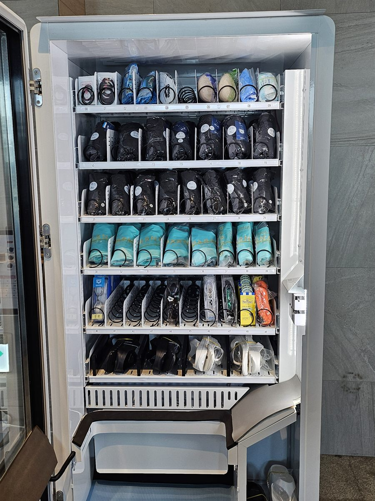

성동구 무인자판기 설치
헬스장 운동용품 자판기 1대

운동시설에 자판기를 놓는다고 하면 보통 음료와 단백질 보충제를 먼저 떠올리십니다. 그런데 현장에 나가 보면 회원들이 데스크에서 가장 자주 찾는 것은 음료가 아닙니다. 수건을 안 가져왔거나, 물안경이 끊어졌거나, 실내화를 두고 온 경우입니다. 그때마다 직원이 창고에서 꺼내 오고 돈을 받고 장부에 적습니다. 이 일이 하루에 여러 번 반복되면 결국 사람 손이 묶입니다.
이번 성동구 현장은 그 지점을 자판기로 옮긴 경우였습니다. 음료 자판기는 이미 다른 층에 있었고, 데스크에서 손으로 팔던 용품만 따로 떼어 한 대에 모았습니다. 기계를 고르기 전에 먼저 한 일은 "지난달에 데스크에서 몇 번이나 꺼내 줬는지"를 품목별로 적어 보는 것이었습니다. 그 목록이 그대로 칸 배치가 됐습니다.
성동구 헬스장에 들어간 구성
용품 자판기는 음료 자판기와 설계 자체가 다릅니다. 캔과 페트병은 크기가 거의 같아서 칸을 균일하게 짜도 되지만, 용품은 수영모처럼 손바닥만 한 것부터 슬리퍼처럼 두툼한 것까지 섞여 있습니다. 그래서 칸 높이를 위에서 아래로 갈수록 넓게 잡고, 무거운 품목은 아래쪽에 배치했습니다. 스프링 간격도 품목마다 다르게 맞춰야 하나만 나와야 할 때 두 개가 같이 밀려 나오는 일이 없습니다.
의류와 수건처럼 접히는 품목은 비닐에 말아 넣고 겉에 사이즈 라벨을 붙였습니다. 유리문 너머로 봐도 사이즈가 바로 보여야 회원이 직원을 찾지 않습니다. 결제는 카드와 간편결제만 두고 현금함은 넣지 않았습니다. 운동복 차림으로 오는 손님이 지갑을 들고 다니지 않는 데다, 현금은 관리 부담만 늘기 때문입니다. 어떤 칸이 비었는지는 사장님 휴대폰에서 확인합니다.
- 기종 — 용품 전용 1대. 칸 높이를 위·중간·아래 세 단계로 나눠 짬
- 품목 — 수영모·물안경·수건·운동복·슬리퍼 등 데스크에서 손으로 팔던 것
- 포장 — 접히는 품목은 비닐에 말고 겉면에 사이즈 라벨 부착
- 결제·관리 — 카드·간편결제 전용, 현금함 없음, 빈 칸 원격 확인
용품 자판기, 잘 맞은 점과 미리 알아야 할 점
잘 맞은 쪽부터 말씀드리면 데스크가 조용해진 것입니다. 직원이 상담과 안내에만 집중할 수 있게 됐고, 창고를 오가는 횟수가 줄었습니다. 회원 입장에서도 직원을 기다릴 필요 없이 바로 뽑아 들어가면 되니 덜 미안해합니다. 무인으로 도는 이른 시간과 늦은 시간에도 용품을 살 수 있다는 점이 실제로는 더 컸습니다.
미리 아셔야 할 점도 솔직히 적겠습니다. 첫째, 품목 수를 처음부터 늘리면 재고가 묶입니다. 용품은 음료와 달리 유통기한은 없지만 사이즈별로 쟁여 두게 되고, 안 나가는 사이즈는 계속 칸만 차지합니다. 확실히 나가는 서너 가지로 시작해 늘리는 편이 낫습니다. 둘째, 포장 작업이 생깁니다. 의류를 말아 라벨을 붙이는 일은 몇 분이면 되지만 보충 때마다 해야 하는 일입니다. 셋째, 용품은 단가가 제각각이라 가격표를 화면과 라벨 양쪽에 맞춰 둬야 합니다. 한쪽만 고치면 회원이 묻게 되고 결국 데스크 일이 다시 늘어납니다.
성동구, 이런 자리가 잘 됩니다
성동구는 한 구 안에서 생활 리듬이 뚜렷하게 갈리는 곳입니다. 성수동은 지식산업센터와 사무실, 카페 상권이 몰려 있어 평일 낮과 퇴근 직후에 사람이 가장 많습니다. 왕십리동과 행당동, 사근동 쪽은 한양대학교와 왕십리역 환승 동선이 겹쳐 아침저녁 유동이 길게 이어집니다. 금호동과 옥수동, 응봉동은 언덕을 따라 아파트가 들어선 주거 권역이라 이른 아침과 저녁에 움직임이 몰립니다.
운동시설 자판기로 볼 때는 회원이 매일 같은 시간에 오는 곳이 가장 잘 맞습니다. 출근 전에 들렀다 가는 직장인 비중이 높은 성수동 일대 시설, 통학 동선에 걸친 왕십리동 권역, 단지 안에서 걸어 오는 금호동·옥수동 주거지 시설이 그렇습니다. 반대로 하루 이용객이 적고 회원이 용품을 전부 챙겨 다니는 소규모 시설은 용품보다 음료 한 대로 시작하시는 편이 낫습니다.
성동구 서비스 지역
성수동 · 왕십리동 · 행당동 · 응봉동 · 금호동 · 옥수동 · 마장동 · 사근동 · 용답동 · 송정동 · 도선동 · 홍익동
성동구 전역에서 방문 상담이 가능합니다. 맞닿은 광진구·중랑구·동대문구·종로구·중구·용산구·강남구·송파구도 같은 담당자가 함께 다닙니다. 지역별 안내는 성동구 무인자판기 설치 안내 페이지에서 보실 수 있습니다.
성동구 무인자판기, 이렇게 시작하시면 됩니다
전화나 상담 신청으로 시설 주소만 남겨 주시면 됩니다. 담당자가 나가서 놓을 자리의 벽면 길이와 천장 높이, 콘센트 위치, 회원 동선을 확인합니다. 용품 자판기는 품목 목록을 먼저 정해야 칸 설계가 나오는 기종이라, 데스크에서 손으로 팔던 것이 무엇인지 알려 주시면 그 자리에서 구성을 잡아 드립니다. 설치일이 정해지면 끝이며, 설치비는 받지 않습니다. 기계는 구입·렌탈·임대 중에서 고르실 수 있습니다.
용품을 팔아 본 적이 없어 품목이 막연하시면, 음료와 용품을 섞은 한 대로 시작해 반응을 보고 나누는 방법도 있습니다. 운동시설은 회원 구성에 따라 나가는 물건이 크게 달라져서, 처음부터 전용으로 가기보다 확인하고 늘리는 순서가 안전합니다.
※ 사진은 픽프리가 시공한 설치 사례이며, 글에 적힌 지역의 현장 사진은 아닙니다.
함께 많이 찾는 키워드
성동구 무인자판기 · 성동구 자판기 설치 · 성동구 자판기 임대 · 성동구 자판기 렌탈 · 서울 무인자판기 · 서울 자판기 설치 · 성수동 자판기 · 왕십리동 자판기 · 행당동 자판기 · 응봉동 자판기 · 금호동 자판기 · 옥수동 자판기 · 마장동 자판기 · 사근동 자판기 · 용답동 자판기 · 송정동 자판기 · 헬스장 자판기 · 체육시설 자판기 · 운동용품 자판기 · 수건 자판기 · 수영용품 자판기 · 피트니스 자판기 · 스마트 자판기 · 카드 자판기 · 무인키오스크 설치 · 자판기 설치비용 · 자판기 원격관리 · 무인창업